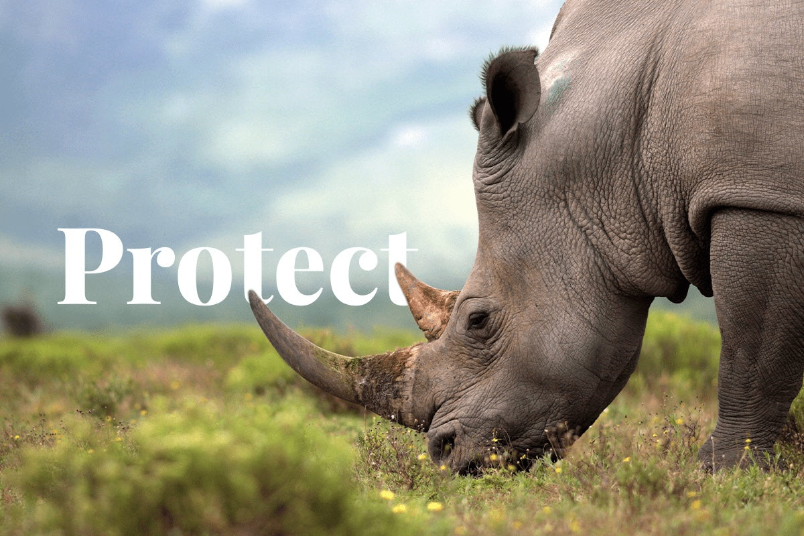

The Importance of Biodiversity

Biodiversity, the variety of life on Earth, is essential for the health of our planet.
It provides ecosystem services that are critical for human survival, such as clean air and water,
pollination of crops, and climate regulation. Each species, no matter how small,
plays a unique role in maintaining the balance of ecosystems. When one species is lost,
it can have a cascading effect on others, leading to ecosystem degradation.
Protecting biodiversity ensures that ecosystems remain resilient and capable of adapting to changes,
whether they be natural or human-induced.
Threats to Wildlife and Endangered Species

Wildlife and endangered species face numerous threats, many of which are human-induced. Habitat destruction, caused by deforestation,
urbanization, and agriculture, is one of the leading causes of species decline. For instance, the destruction of tropical rainforests
has led to the loss of countless species that are endemic to these regions. Pollution, including plastic waste and chemical runoff,
contaminates habitats and harms wildlife. Marine life, in particular, suffers from plastic pollution, with animals ingesting or becoming entangled in debris.
Overexploitation through hunting, fishing, and the illegal wildlife trade also significantly reduces animal populations. The poaching of elephants for their
ivory and rhinos for their horns exemplifies this threat. Climate change exacerbates these threats by altering habitats and food sources, leading to increased
competition and stress for survival. Addressing these threats requires global cooperation and a commitment to sustainable practices, such as implementing stricter
regulations and promoting conservation awareness.
Conservation Efforts and Success Stories

Conservation efforts are crucial in protecting wildlife and endangered species. Protected areas, such as national parks and wildlife reserves, provide safe havens
for species to thrive. These areas act as biodiversity hotspots where endangered species can find refuge from human activities. Legislation, like the Endangered Species Act,
offers legal protection and resources for conservation programs. International agreements, such as the Convention on International Trade in Endangered Species (CITES),
help regulate the trade of endangered species and their products. Community involvement and education are also key components, as they foster a sense of stewardship and
encourage sustainable living practices. Local communities often play a vital role in conservation efforts by participating in habitat restoration and monitoring wildlife populations.
Success stories, such as the recovery of the Greater One-Horned Rhinoceros in India and Nepal, demonstrate that conservation efforts can yield positive results.
These rhinos were once on the brink of extinction but have rebounded due to stringent protection measures and habitat restoration projects. Another notable success is the increase in
the population of the Giant Panda in China, thanks to dedicated conservation programs and reforestation efforts.